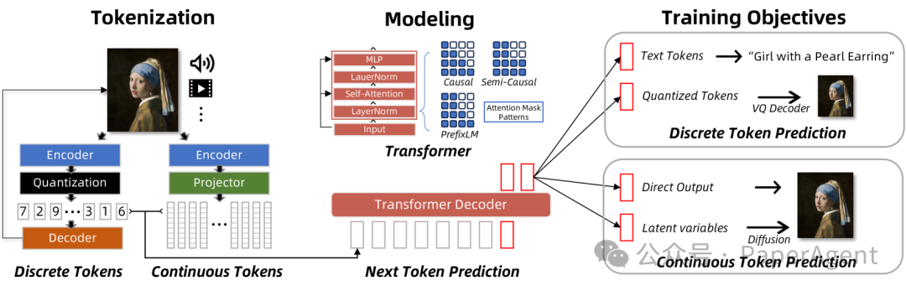
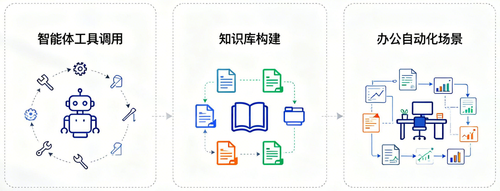
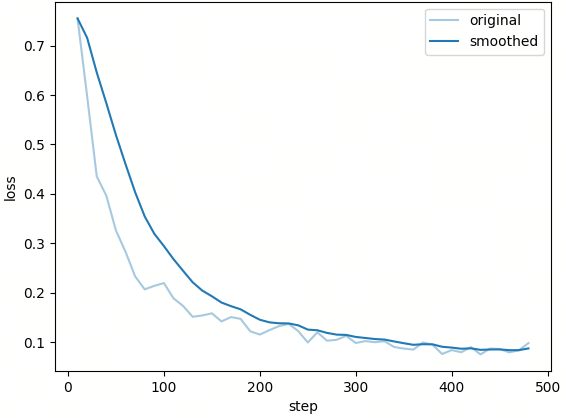
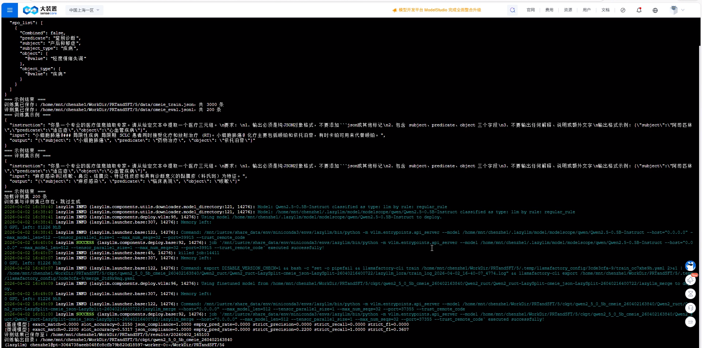
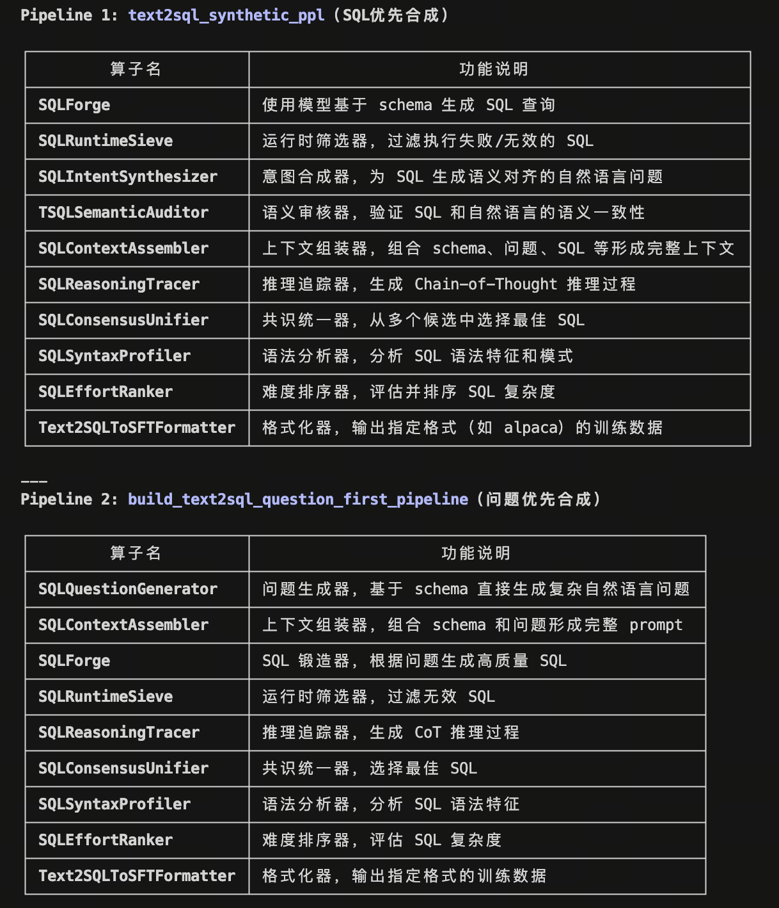
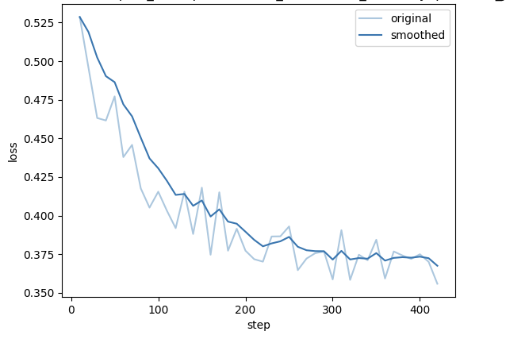
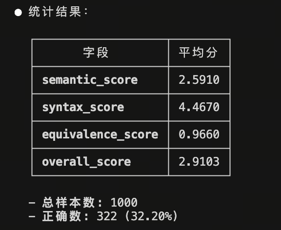
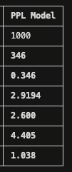
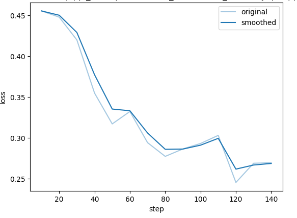
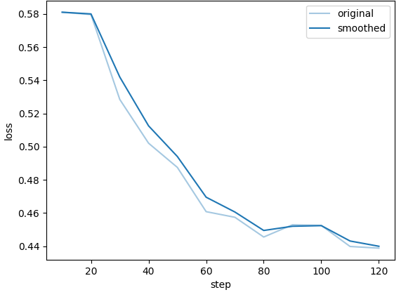

第22课时：结构化输出与格式对齐¶
1 本课导读¶
1.1 核心背景：从"闲聊"到"办事"¶
在大模型能力逐渐成熟之后，真正制约其落地价值的，往往不再是"会不会回答问题"，而是"能不能被系统可靠地使用"。在真实业务场景中，大模型并不是独立存在的对话机器人，而是需要嵌入到一整套确定性的软件系统中，与数据库、后端服务、规则引擎、自动化流程紧密协作。这一步，恰恰是从"能聊天"走向"能办事"的关键分水岭。
这里的核心矛盾在于：大语言模型本质上是一个概率生成系统。

在给定上下文的情况下，它生成下一个 token 的过程可以形式化为
其中，\(x_t\) 表示序列中第 \(t\) 个位置的 token，\(x_{\le t}\) 表示从起始位置到第 \(t\) 个位置为止的全部已生成 token 序列，\(x_{t+1}\) 是模型在当前上下文条件下预测的下一个 token；\(P(x \mid x_{\le t})\) 表示语言模型在给定历史上下文 \(x_{\le t}\) 时，对所有可能候选 token 的条件概率分布，符号"\(\sim\)"表示 \(x_{t+1}\) 是从该概率分布中采样或选择得到的结果。
这种机制天然追求"合理""自然"，却并不关心输出是否严格符合某种格式规范。而软件系统恰恰相反，它依赖的是高度确定、可解析、可校验的结构化接口，例如固定字段的 JSON、层级明确的 XML，或者严格类型约束的参数对象。当模型输出只多一句解释性文字、少一个右括号，甚至只是把数字写成字符串时，在人类看来可能无关紧要，但对程序而言却是"不可用"的致命错误。这也是为什么在 Agent 工具调用、函数调用、RAG 知识库构建等场景中，"格式正确率"往往比"语言是否优美"更加重要。
可以把这个问题类比为：人类在口头交流中可以模糊表达、上下文补全，但在填写表单或提交 API 请求时，每一个字段、每一种类型都必须精确无误。结构化输出，正是让大模型学会"像程序一样说话"的过程。
1.2 本课目标¶
本课的核心目标，并不是简单地教会你"让模型输出一个 JSON"，而是系统性地解决如何让模型稳定、可控、规模化地输出高质量结构化结果这一问题。
首先，我们会从提示层面入手，理解为什么普通自然语言指令在结构化任务中经常失效，以及如何通过明确的 Schema 描述、示例约束和边界提示，引导模型在生成阶段就"走在正确的轨道上"。你将掌握一套可复用的方法，使模型在面对不同输入时，仍然能够保持输出结构的一致性和可解析性。
其次，本课会深入到数据层面，讨论结构化信息抽取任务对数据集的特殊要求。相比开放式问答，这类任务更强调字段对齐、类型一致和内容可验证性。我们会讲清楚什么样的数据才算"高质量的结构化数据"，以及如何通过数据合成、自动校验和负样本设计，逐步逼近真实业务中的复杂场景。
在训练与推理层面，你将理解结构化能力并非"自然涌现"，而是可以通过监督微调和推理约束被显著强化的能力。例如，为什么在微调阶段强调 Schema 严格对齐，会直接影响推理时的格式遵从率；又例如，在生成阶段引入语法约束解码，本质上是在搜索空间中对非法路径进行剪枝。
最后，在实践部分，我们会基于 LazyLLM 给出一条完整、可落地的工程流程：从原始文本数据出发，经过 Schema 设计、数据准备、模型微调，到最终评测与效果验证。你不仅能看到"模型学会了什么"，还能清楚地理解"它为什么能学会、在哪些情况下依然会失败"。
通过这一课，你将具备把大模型安全、可靠地接入工程系统的能力，为后续更复杂的 Agent 系统、多工具协同和企业级应用打下坚实基础。
2 为什么需要结构化输出¶
2.1 关键应用场景¶
当大模型真正进入生产环境后，它面对的对象不再只是"人"，而是大量需要自动化处理的系统与流程。在这些场景中，自然语言只是输入形式，真正被下游系统消费的，几乎全部是结构化数据。结构化输出的价值，并不体现在"更好看"，而体现在"能被稳定执行"。

在智能体工具调用（Agent Tool Use）中，这一点体现得尤为明显。Agent 的核心能力并不是"想得多聪明"，而是"能不能把正确的参数传给正确的工具"。当模型需要调用一个函数时，往往必须生成一个严格符合 Schema 的 JSON 对象，例如函数名、参数列表、参数类型都不能出错。哪怕只是在 JSON 外多输出了一句解释性文本，解析就会直接失败，导致整个 Agent 流程中断。在这一场景下，模型生成行为更接近于"构造一段程序输入"，而不是"回答一个问题"。
知识库构建（RAG）是另一个高度依赖结构化输出的典型场景。真实业务中的文档往往是非结构化的，比如 PDF、Word、网页正文或扫描文本。如果只是让模型"概括一下内容"，它可以写出一段看似合理的摘要，但这些内容很难被复用。而当我们希望将文档纳入知识库，就必须把关键信息拆解为可索引、可过滤、可组合的字段，例如标题、作者、时间、章节结构、关键实体等。只有当模型输出的是稳定的结构化结果，后续的向量化、存储和检索才能形成一条可靠的流水线。
在办公自动化场景中，结构化输出几乎是隐形的基础设施。无论是从邮件中提取待办事项，从会议纪要中整理行动项，还是将日报、周报自动转化为系统表单，本质上都需要模型完成"自然语言 → 结构化记录"的转换。人类可以在模糊表述中自行理解优先级和责任人，但系统无法依赖这种隐含语义，只能依赖明确字段来驱动流程。例如，一个待办事项是否包含截止时间、负责人是否唯一、任务状态是否合法，这些都直接决定了自动化是否可行。
可以看到，在这些场景中，大模型的角色已经发生变化：它不再只是一个"语言生成器"，而是一个结构化信息生产器，是自动化系统中的上游组件。一旦输出失控，影响的不只是一次回答，而是整条业务链路。
2.2 主要挑战与痛点¶
尽管结构化输出在工程系统中至关重要，但对大模型而言，"按要求生成结构"并不是一件自然的事情。实践中，问题往往集中在以下三类，而且都具有对人类友好、对机器致命的特点。
格式错误（Format Errors）
这是最直观、也最常见的问题。模型在生成过程中，容易在结构边界处"失手"，例如括号不匹配、字段名拼写不一致，或在结构外混入解释性文本。这些错误在人眼看来几乎不影响理解，但会直接导致解析失败。
示例（期望输出）：
模型可能输出：
问题点包括：
- JSON 外层混入自然语言文本
- 缺少右花括号
- 结果整体无法被解析器读取
内容幻觉（Content Hallucination）
在结构化任务中，幻觉通常不是"胡编乱造一段话"，而是模型擅自补全 Schema 未要求或原文未提供的信息。这些内容往往"看起来合理"，但在工程语义上是明确错误的。
示例（原文只提供姓名）：
期望输出：
模型可能输出：
问题点包括：
- 输出了 Schema 中未定义的字段
- 编造了输入中不存在的信息
- 难以通过简单规则判断其"是否可信"
在开放式问答中，这种行为可能被视为"智能补全"，但在结构化抽取中属于严重错误。
类型不匹配（Type Mismatch）
类型问题在工程中往往最容易被低估，却最容易引发隐蔽故障。模型并不真正理解"类型约束"，很容易在数值、字符串、枚举和数组之间自由切换。
示例（Schema 要求 age 为整数）：
模型可能输出：
或：
问题点包括：
- 数字被输出为字符串
- 枚举值被替换为自然语言描述
- 单值字段被错误地包装成数组
这些错误在小规模测试中不一定立即暴露，但在写入数据库或对接下游系统时，往往会以"偶发异常"的形式出现，极大增加排查和维护成本。从根本上看，这三类问题并不是模型"不理解任务"，而是模型的生成目标与工程系统的约束目标并不一致。模型在训练时优化的是条件概率：
其中，\(\theta\) 表示模型的可学习参数集合；\(x_t\) 表示序列中第 \(t\) 个位置生成的 token；\(x_{<t}\) 表示在当前位置之前已经生成的所有 token 构成的上下文；\(P_\theta(x_t \mid x_{<t})\) 是在参数为 \(\theta\) 的模型下，给定历史上下文 \(x_{<t}\) 时生成下一个 token 为 \(x_t\) 的条件概率；对时间步 \(t\) 的求和表示对整段序列中每一步预测的对数似然进行累积最大化，这正是自回归语言模型的基本训练目标。
也正因为如此，模型在生成时天然更关注输出在整体上是否"自然、连贯、合理"，而并不直接关心结果是否严格符合某个预定义的 Schema，或类型是否可以被程序安全校验。如果缺乏明确的结构约束、针对性的训练数据以及推理阶段的控制手段，模型往往会本能地优先保证语言流畅性，从而牺牲结构上的确定性。所以，结构化输出的难点并不在于模型是否"理解了任务"，而在于如何在生成过程中持续约束模型的行为，让它在每一次输出时都主动收敛语言表达的自由度，严格遵循既定的结构规范。这也正是后续章节反复强调 Schema 设计、数据流水线构建以及推理约束机制的根本原因。
3 结构化抽取的数据集生态¶
3.1 数据集结构解析¶
在结构化信息抽取任务中，"数据集长什么样"本身就决定了模型最终会学到什么能力。与普通对话、摘要或问答数据不同，结构化抽取数据集并不是简单地给模型一段文本、让它自由回答，而是通过精心设计的输入形式，明确告诉模型：你现在面对的是一个受约束的生成任务。
一个完整、规范的结构化抽取样本，通常由三部分共同构成，而不是单一的"文本输入"。
第一部分是任务指令，用于定义模型的角色和行为边界。例如明确这是一个信息抽取任务、要求只输出结构化结果、禁止附加解释性语言等。这一部分的作用，是在生成行为发生之前，就先"收紧"模型的自由度，让它意识到自己不是在做闲聊或写作。
第二部分是Schema 描述，也就是目标结构的形式化定义。Schema 可以是字段列表、JSON Schema、类 TypeScript 接口，或者带自然语言说明的结构约束。它回答的是"要抽什么、以什么结构输出"的问题，是整个样本中最关键的约束信息。Schema 的存在，等价于在输出空间中提前划定了一组合法路径，模型所有的生成都应当落在这组路径之内。
第三部分才是原始文本，即需要被抽取信息的非结构化内容，例如简历、新闻段落、合同条款或对话记录。模型并不是直接对文本"自由理解"，而是在 Schema 的约束下，对文本进行有目标的解析。
因此，一个更准确的抽象形式应当是：
Input = 任务指令 + Schema + 原始文本
Output = 严格符合 Schema 的 JSON
例如，在一个联系人信息抽取任务中，模型实际看到的 Prompt 可能类似于：
你是一个信息抽取模型。
请根据给定的 Schema，从文本中抽取对应字段。
要求只输出 JSON，如果字段无法确定则输出 null。
Schema:
{
"name": string,
"phone": string,
"school": string
}
文本:
张三毕业于北京大学，联系电话是 13800001234。
对应的输出必须是一个完全可解析、无冗余内容的结构化结果：
这里需要特别注意的是：在结构化抽取数据集中，Prompt 本身就是训练信号的一部分。模型不仅在学习如何从文本中找信息，也在学习如何遵守指令、如何理解 Schema、以及在不确定时如何克制生成。这也是为什么同样是"抽取姓名和电话"，不同数据集训练出来的模型，在格式稳定性和幻觉控制上会有巨大差异。
从输出角度看，这类数据集还有一个显著特征：结果高度确定。在给定文本和 Schema 的前提下，合理输出通常是唯一或近似唯一的。这使得结构化抽取任务更适合采用字段级准确率、格式正确率等指标进行评估，而不是关注语言多样性。
理解这种数据结构，有助于在后续构建或使用数据集时避免一个常见误区：只关心"抽得对不对"，却忽略了"是不是在正确的结构约束下抽的"。而在真实工程中，后者往往比前者更重要。
3.2 常见开源数据集介绍¶
结构化抽取相关的数据集并不是"为了结构而结构"，而是在不同任务需求的推动下逐步演化形成的。从弱约束的语义三元组，到强约束、可直接执行的 SQL 或代码，再到工程化指令微调数据，这些数据集共同构成了一条清晰的能力演进路径。下面在前一版的基础上，对每一个数据集补充更完整的背景、结构特点与工程意义说明。
一、通用信息抽取类数据集
- CaST (Commonly used Slot and Type)：CaST 或与其相关的 REBEL 数据集是当前关系抽取任务的基石之一。它通过对维基百科进行深度处理，将非结构化文本转化为"头实体-关系-尾实体"的三元组格式。该数据集涵盖了超过 200 种不同的关系类型，使其成为训练通用抽取模型的理想选择。在 SFT 阶段使用此数据集，可以显著提升模型在面对未知文本时识别潜在逻辑关联的能力，尤其是对于那些需要从长段落中理清人物、地点及事件关系的场景。
{
"title": "Wikipedia Article Title",
"context": "Full text paragraph...",
"triplets": [
{"head": "Subject Entity", "type": "Relation Type", "tail": "Object Entity"}
]
}
- OpenIE6 / OIE2016：OIE2016 是首个在大规模语料基础上构建的、包含丰富语法结构和语义关系的开放信息抽取数据集。与传统预定义关系的抽取不同，它不限制关系的类别，而是要求模型直接从句子中提取出谓语及其相关的论元（主语、宾语等）。在微调 LLM 时，该数据集能训练模型理解自然语言中的叙述结构，使其能够以"谁做了什么"的格式总结任何输入的文本。这对于构建自动化知识图谱或摘要生成工具至关重要。
{
"sentence": "The president visited the capital in 2023.",
"extractions": [
{"arg1": "The president", "rel": "visited", "arg2": "the capital", "tm": "in 2023"}
]
}
- CoNLL-2003 (NER)：作为命名实体识别（NER）领域的金标准，CoNLL-2003 专注于四种核心实体：人名、地名、组织机构名以及其他杂项实体。虽然它诞生较早，但其标注的高准确性使其至今仍是微调结构化输出能力的首选。通过将此数据集转化为指令格式（例如："请提取下文中的所有地点名"），可以训练模型对文本边界的敏感度，防止在抽取任务中出现"幻觉"或提取不完整的情况，是构建任何信息抽取系统的"第一课"。
{
"tokens": ["U.N.", "official", "Ekeus", "heads", "for", "Baghdad"],
"ner_tags": [3, 0, 1, 0, 0, 5], // 3: B-ORG, 1: B-PER, 5: B-LOC
"ner_labels": ["B-ORG", "O", "B-PER", "O", "O", "B-LOC"]
}
- DocRED (Document-level RE)：传统的抽取任务往往局限于单句，而 DocRED 挑战的是文档级关系抽取。它要求模型阅读多段文字，识别跨句子的实体，并推断它们之间的隐藏关系。该数据集包含海量的标注三元组，不仅涵盖了实体识别，还涉及到了指代消解和推理。在 SFT 中引入 DocRED，可以训练模型处理长上下文的能力，使其具备在复杂背景下整理出结构化信息的能力，而非仅仅停留在字面上的简单匹配。
{
"vertexSet": [[{"name": "Entity A", "pos": [0, 2], "type": "ORG"}], [...]],
"labels": [
{"h": 0, "t": 1, "r": "P17", "evidence": [1, 2]} // h: head, t: tail, r: relation_id
],
"sents": [["Sentence", "1", "..."], ["Sentence", "2", "..."]]
}
二、垂直领域抽取数据集
- CMeEE (Chinese Medical Entity Extraction)：CMeEE 是中文医疗信息处理（CHIP）挑战赛的一部分，是目前最权威的中文医疗实体识别数据集之一。它包含了疾病、症状、药物、化验指标等九大类复杂的医学概念。医疗领域的文本通常含有大量专业术语和长难句，使用该数据集进行微调，可以极大提升 LLM 在智慧医疗助手、电子病历分析等场景下的专业度，使模型能够精准识别出医学报告中的核心要素，为后续的结构化辅助诊断打下基础。
{
"text": "患者近期出现偏头痛，建议服用布洛芬。",
"entities": [
{"start_idx": 5, "end_idx": 7, "type": "sym", "entity": "偏头痛"},
{"start_idx": 11, "end_idx": 13, "type": "dru", "entity": "布洛芬"}
]
}
- FINER (Financial Entity Recognition)：FINER-139 是一个针对金融领域新闻和公告设计的大规模数据集。不同于普通的 NER，它细化了多达 139 种金融相关的标签，如"营收增长率"、"资产负债项"等。金融文本通常逻辑极其严密且包含大量数字，模型需要极高的精确度才能确保提取的数据具有可用性。通过 SFT，模型可以学习到金融报表的特有语境和术语缩写，从而能够胜任自动化金融审计、研报分析和结构化财务摘要的生成工作。
{
"tokens": ["Revenue", "increased", "by", "10", "percent"],
"ner_tags": [0, 0, 0, 45, 46], // 45-46 对应金融比例或数值标签
"nested_entities": "..."
}
- SciERC (Scientific IE)：SciERC 专注于科学论文摘要的信息抽取。它包含了 500 篇 AI 领域论文的摘要，标注了科学实体（如方法、度量、任务）以及它们之间的相互关系（如"USED-FOR"、"PART-OF"）。在学术研究日益增多的今天，利用 SciERC 微调模型，可以让 AI 辅助科研人员快速梳理领域技术脉络，自动生成论文的"技术画像"，将繁杂的学术语言转化为清晰的结构化图谱。
{
"clusters": [],
"sentences": [["Text", "of", "abstract", "..."]],
"ner": [[[0, 1, "Method"], [5, 6, "Task"]]],
"relations": [[[0, 1, 5, 6, "USED-FOR"]]]
}
- ADE (Adverse Drug Events)：ADE Corpus V2 专门用于从医学文本中提取药物副作用（不良反应）及其相关实体。它要求模型识别出特定药物与患者产生的不良症状之间的因果关系。这种带有逻辑链条的抽取任务比单纯的分类更具挑战性。通过该数据集微调，模型在处理患者自述或医生诊疗记录时，能更敏锐地捕捉到安全隐患，是构建药物监控系统或自动化医药报告生成的关键数据来源。
{
"text": "Arthralgia occurred after taking Ribavirin.",
"adverse_effects": [
{"effect": "Arthralgia", "start": 0, "end": 10, "drug": "Ribavirin"}
]
}
三、代码与查询类结构化任务数据集
- Spider (Complex Text-to-SQL)：Spider 是目前最广泛使用的跨域 Text-to-SQL 数据集。它包含 1 万多个查询和 200 多个复杂的数据库。与简单的任务不同，Spider 要求模型处理多表连接（JOIN）、嵌套查询以及复杂的聚合操作（GROUP BY/HAVING）。通过 Spider 进行 SFT，能让 LLM 真正理解自然语言与逻辑查询语言之间的语义映射，使非技术人员也能通过对话直接从复杂的业务数据库中调取结构化报表。
{
"question": "How many singers do we have?",
"db_id": "concert_singer",
"query": "SELECT count(*) FROM singer",
"sql": {"select": [[7, [0, [0, 0, false], null]]], "from": {"table_units": [["table_unit", 1]], "conds": []}}
}
- MBPP (Mostly Basic Python Problems)：MBPP 包含大约 1,000 个入门级 Python 编程问题，每个问题都附带了任务描述、代码实现和用于验证的单元测试用例。不同于纯代码补全，MBPP 更侧重于"根据描述写代码"。在 SFT 过程中，MBPP 能训练模型理解功能性需求，并产出语法正确且逻辑闭环的代码块。它是提升 LLM 编程辅助能力的基础，尤其是在解决特定算法问题和基础逻辑实现方面表现出色。
{
"task_id": 1,
"text": "Write a function to find the area of a circle.",
"code": "import math\ndef circle_area(r):\n return math.pi * r**2",
"test_list": ["assert circle_area(2) == 12.566370614359172"]
}
- WikiSQL：WikiSQL 是 Text-to-SQL 任务的入门级大数据集，包含由维基百科表格生成的 8 万多条自然语言查询及其对应的 SQL 语句。虽然它的逻辑复杂度低于 Spider，主要侧重于单表查询（SELECT, WHERE 子句），但其巨大的数据量非常适合初步培养模型对表格结构的感知。微调后的模型能够胜任从 Excel 或简单数据表中提取、过滤信息的任务，是开发智能表格助手（Chat-with-Table）的必备素材。
{
"phase": 1,
"question": "What is the result for the team with 3 wins?",
"sql": {
"sel": 2, "conds": [[0, 0, "3"]], "agg": 0
},
"table": {"header": ["Team", "Wins", "Result"], "rows": [["A", "3", "Win"]]}
}
- CoSQA (Code Question Answering)：CoSQA 聚焦于代码搜索和自然语言问答。它包含了 2 万多对来自真实搜索引擎的查询和 Python 函数实现。这个数据集的独特之处在于它体现了人类在寻找代码解决方案时的真实提问习惯（往往是非规范、口语化的）。使用 CoSQA 微调，可以增强模型在"理解人类意图"与"检索/生成准确算法"之间的匹配能力，非常适合用于优化 IDE 插件或开发者文档的搜索体验。
{
"question": "python check if file exists",
"code": "import os.path\nos.path.isfile(fname)",
"docstring": "Checks if a file exists given a path...",
"label": 1 // 1 for match, 0 for non-match
}
四、指令微调与格式约束数据集
- OpenHermes 2.5：OpenHermes 2.5 是目前开源界公认的高质量合成数据集，由 Teknium 整理。它汇集了超过 100 万条指令对，涵盖了数学推理、复杂代码编写、创意写作以及极其严格的格式化约束任务。该数据集的优势在于其多样性，它迫使模型学会"听话"，即严格遵守指令中的 JSON 格式要求、字数限制或特定的语气风格。它是目前许多顶级开源模型（如 Hermes 系列）能够展现出超越其参数量能力的秘密武器。
{
"instruction": "Explain quantum physics to a 5-year-old in JSON format.",
"input": "",
"output": "{\"explanation\": \"It's like being in two places at once...\"}",
"source": "platypus",
"model_name": "gpt-4"
}
- UltraChat：UltraChat 是一个专注于多轮对话和复杂指令遵循的数据集。它通过自动化的方式生成了涵盖常识咨询、逻辑推理和角色扮演等多个维度的对话流。对于需要进行长流程、多步骤结构化抽取的任务，UltraChat 能训练模型保持上下文的一致性。通过此数据集微调，模型能更好地处理那种"先提取信息，再根据提取结果进行分类，最后输出指定格式报告"的复合型指令任务。
{
"id": "0",
"data": [
{"role": "user", "content": "How can I improve my focus?"},
{"role": "assistant", "content": "There are several ways..."},
{"role": "user", "content": "Can you give me a schedule?"}
]
}
- LIMA (Less Is More for Alignment)：LIMA 数据集遵循"少即是多"的原则，仅包含 1,000 条经过人工极致精选的高质量样本。虽然数量不多，但每条样本都代表了人类对复杂问题的完美回答范式。在结构化任务中，LIMA 能够帮助模型摆脱冗长、重复的废话，学会以最高效、最清晰的结构回复用户。它是微调模型输出风格、提升回答质感的极佳选择，尤其适用于追求高审美、逻辑分明的指令响应场景。
{
"conversations": [
"How do I cook a perfect steak?",
"To cook a perfect steak, follow these steps: 1. Season... 2. Sear... 3. Rest..."
],
"source": "reddit/stackexchange"
}
- Self-Instruct (Instruction Following)：Self-Instruct 是一种创新的数据集生成方法产物，它展示了如何引导模型自己生成多样化的指令。它包含大量涵盖了排版、改写、结构化数据转换等任务的指令对。在 SFT 中使用它，可以弥补人工标注数据在覆盖面上的不足。该数据集特别擅长训练模型的"元能力"，即让模型理解不同任务类型的本质区别，从而在面对全新的、从未见过格式约束任务时，仍能保持极高的鲁棒性和遵循度。
{
"instruction": "Categorize the following animals into mammals or reptiles.",
"input": "Snake, Dog, Turtle, Cat",
"output": "Mammals: Dog, Cat. Reptiles: Snake, Turtle.",
"most_similar_instructions": ["..."]
}
从这些数据集可以看到，结构化抽取并不是单一任务，而是一组围绕"受约束生成"展开的能力集合。不同数据集通过不同的 Schema 设计方式，塑造了模型在结构遵循、信息对齐和生成克制性方面的行为特征，这也是它们在工程实践中长期具有参考价值的原因。
4 构建高质量结构化数据集的流水线¶
4.1 Step 1: Schema 设计（核心）¶
在结构化抽取任务中，Schema 设计几乎决定了数据集的上限。很多看似是"模型能力不足"的问题，最终都会回溯到 Schema 本身是否清晰、稳定、可执行。Schema 并不仅仅是字段列表，它实际上承担着"任务定义"的角色：哪些信息是合法的、哪些输出是被允许的、哪些情况需要保持空值或缺失。
在工程实践中，最常见的两种 Schema 表达方式是 JSON Schema 和基于 Pydantic 的数据模型。JSON Schema 更偏向协议层和跨语言表达，适合直接用于校验和接口定义；Pydantic 则更贴近 Python 工程生态，可以将数据约束、类型检查和默认值自然地融合在一起。无论采用哪一种，其目标都是一致的：让结构定义足够明确，使"正确输出"在形式上是可判断的。
设计 Schema 时，首先需要关注字段的语义边界。每一个字段都应当回答一个明确的问题，而不是承载多重含义。例如，"学校信息"与"毕业院校"在很多场景下并不等价，如果混用，模型就会在训练过程中形成模糊映射，最终导致输出不稳定。清晰的语义定义，本质上是在为模型减少歧义空间。
其次是层级设计。初学者往往倾向于构造深层嵌套的结构，试图一次性表达所有关系，但在结构化抽取任务中，过深的层级会显著增加生成难度。实践中更推荐"能扁平就扁平"，只在确有必要时引入嵌套对象或数组。扁平化结构不仅更容易生成，也更容易被校验、调试和消费。
数据类型的明确性同样关键。字段是字符串、整数、枚举还是数组，都应在 Schema 中明确给出，而不是依赖自然语言暗示。对于模型而言，类型约束是一种非常强的生成信号，它能有效减少"看起来对、实际上错"的输出情况。在某些场景下，枚举类型甚至比自由字符串更重要，因为它直接限定了合法值集合。
下面是一个简化的 Pydantic 示例，用于说明 Schema 在工程中的具体形态：
from pydantic import BaseModel
from typing import List, Optional
class ResumeInfo(BaseModel):
name: str
phone: Optional[str]
school: Optional[str]
skills: List[str]
# 打印 Schema 结构
print(ResumeInfo.schema())
输出如下：
{'properties': {'name': {'title': 'Name', 'type': 'string'}, 'phone': {'anyOf': [{'type': 'string'}, {'type': 'null'}], 'title': 'Phone'}, 'school': {'anyOf': [{'type': 'string'}, {'type': 'null'}], 'title': 'School'}, 'skills': {'items': {'type': 'string'}, 'title': 'Skills', 'type': 'array'}}, 'required': ['name', 'phone', 'school', 'skills'], 'title': 'ResumeInfo', 'type': 'object'}
在工程实践中，像 ResumeInfo.schema() 这样的输出非常有价值。它会以结构化的方式展示每个字段的名称、类型、是否必填以及可选约束条件，既可以作为人类可读的接口文档，也可以直接作为模型提示、数据校验或自动化测试的输入依据。这个 Schema 本身就已经包含了大量隐含约束：字段是否必填、类型边界、可为空的情况。这些信息在后续的数据合成、模型微调以及推理阶段的结果校验中，都会被反复利用，从而将"结构要求"从概念层面真正落到工程实现中。
4.2 Step 2: 数据合成¶
在明确 Schema 之后，下一步往往不是立刻去人工标注数据，而是通过数据合成的方式快速构建高质量样本。尤其是在结构化抽取任务中，人工标注不仅成本高，而且很难保证结构一致性。利用强模型进行逆向生成，已经成为实践中非常常见且有效的策略。
所谓"逆向生成"，核心思路并不是先写文本再抽结构，而是反过来：先生成一个完全符合 Schema 的结构化结果，然后再构造一段自然语言文本，使其能够合理地支撑这些字段值。这样做的最大好处是，输出结构天然是合法的，几乎不会出现字段缺失或类型错误。
以简历信息抽取为例，可以先让模型生成一个合法的 JSON：
随后，将这一结构作为条件输入，让模型反向生成一段自然语言简历文本。下面是一个简化的逆向工程示例代码，用于演示这一过程：
import json
from lazyllm import OnlineChatModule
llm = OnlineChatModule()
# 已生成的结构化结果
resume_json = {
"name": "李明",
"phone": "13912345678",
"school": "清华大学",
"skills": ["Python", "数据分析", "机器学习"]
}
prompt = f"""
下面是一个简历的结构化信息（JSON），请基于这些信息生成一段自然、真实的中文简历描述文本，
要求所有字段信息都能在文本中被明确或隐含地表达出来，不要引入额外不存在的事实。
结构化信息：
{json.dumps(resume_json, ensure_ascii=False, indent=2)}
"""
text = llm(prompt)
print("=== 合成的简历文本 ===")
print(text)
一次典型的模型合成输出可能类似于：
=== 合成的简历文本 ===
李明，手机联系方式为13912345678。他是一位来自清华大学的高材生，拥有扎实的学术背景和丰富的实践经验。在技术技能方面，李明精通Python编程语言，具备强大的数据分析能力，同时在机器学习领域也有深入的研究和应用经验。这些技能使他能够在多个领域中发挥出色的解决问题的能力，无论是数据分析还是机器学习项目，他都能游刃有余地应对挑战。李明期待能够加入一个充满挑战与机遇的团队，以进一步发挥他的技术才能和创新能力。
在这种流程下，每一个样本在结构层面都是"完美的"，训练时模型只需要学习如何从文本中还原这些结构，而不必再为字段缺失、类型错误或非法 JSON 付出额外代价。在实践中，这一过程通常会被拆分为两个自动化阶段：第一阶段批量生成符合 Schema 的结构化样本；第二阶段以这些结构为条件，生成多样化的自然语言文本。通过调节生成温度、提示风格和上下文约束，可以有效提升文本多样性，避免模型只学到固定模板。需要强调的是，数据合成并不是一次性工作，而是一个可迭代的过程。早期样本可以保持字段齐全、语义清晰，帮助模型快速建立"文本—结构"映射；随着训练推进，再逐步引入缺失字段、模糊表述、顺序打乱甚至干扰信息，使数据分布更接近真实业务场景。
从概率建模的角度看，这种逆向生成方式等价于在训练数据中人为强化：
其中，\(\text{Text}\) 表示输入的自然语言文本（如一段简历描述），\(\text{Structure}\) 表示与之对应的结构化表示（如符合 Schema 的 JSON 对象）。条件概率 \(P\) 描述的是：在给定一段文本的前提下，模型生成某一结构化结果的可能性大小。通过逆向生成的数据合成方式，训练样本中的每一段文本几乎都只对应一个合法且完整的结构输出，这相当于在数据层面显式压缩了条件分布的熵，使模型在学习过程中更容易将文本映射到唯一、稳定的结构，而不是在多个格式或字段组合之间产生不确定性。
在此基础上，配合合理的 Schema 设计与可控的数据合成策略，可以在不依赖大规模人工标注的前提下，构建出质量稳定、约束明确的结构化抽取数据集，为后续的自动校验、微调训练和推理约束奠定坚实基础。
4.3 Step 3: 自动化校验与清洗¶
当结构化数据开始批量生成后，真正决定"这批数据能不能用"的，并不是生成模型本身，而是后续的自动化校验与清洗体系。很多结构化抽取任务在实验阶段效果看起来不错，但一旦进入规模化训练或下游系统，就会暴露出大量隐性问题：JSON 偶发不可解析、字段缺失、类型漂移、模型"看起来很合理但实际上是编造"的值。这一阶段的目标不是追求完美，而是通过工程化手段，把不可控的不确定性压缩进可控范围。
最基础的一层是语法校验，解决的是"机器能不能读"的问题。对于 JSON、YAML、XML 这类强结构输出，任何一个多余的逗号、未闭合的括号都会让样本直接失效。在流水线中，语法校验应当是最先执行的硬门槛，不通过就直接丢弃或回炉重生成，而不是进入人工修补阶段。实践中，很多团队会同时保留原始输出与解析失败日志，用于后续分析模型的格式稳定性，而不是简单地"修好就算"。
通过语法校验之后，第二层是 Schema 校验，它关心的是"结构是否符合预期"。这一步不只是检查字段是否存在，更重要的是类型一致性与约束条件。例如某个字段被定义为 List[str]，却偶尔被模型输出为单个字符串；某些数值字段理论上应该满足 \(x \ge 0\)，但模型在边界情况下输出了负值。Schema 校验的价值在于，它把原本分散在 prompt 中的隐性约束，变成了可执行、可复现的规则。
在工程实现上，JSON Schema 或 Pydantic 非常适合作为这一层的"守门人"。一个常见做法是：先解析 JSON，再用 Schema 校验器进行严格校验，失败的样本统一进入失败队列。示例如下：
from pydantic import BaseModel, ValidationError
from typing import List, Optional
class PersonSchema(BaseModel):
name: str
age: Optional[int]
organizations: List[str]
def validate(sample):
try:
obj = PersonSchema(**sample)
return True, obj
except ValidationError as e:
return False, e
第三层是内容一致性校验，也是最容易被忽视、但对结构化抽取质量影响最大的部分。结构是对的、类型也是对的，并不意味着内容是真的。模型非常擅长在上下文模糊时"补全一个看起来合理的值"，尤其是在实体抽取、数值抽取、时间抽取等任务中。内容一致性校验的核心问题只有一个：输出的值，是否真的能在源文本中找到证据。
这一层通常需要结合规则与轻量模型共同完成。例如，对于字符串字段，可以直接检查是否为源文本的子串；对于经过归一化的值，可以先做反归一化再匹配；对于跨度型输出，可以要求模型同时输出起止位置，用 offset 对齐原文。在更复杂的场景中，也可以引入一个 verifier 模型，对"文本 + 抽取结果"进行二次判断，过滤明显不一致的样本。虽然这会引入额外成本，但相比污染整个训练集，代价是可控的。
4.4 Step 4: 数据增强与负样本构建¶
如果说前面的步骤是在"保住下限"，那么数据增强与负样本构建决定的，是模型能否学会真正可靠的抽取行为。很多结构化抽取模型在 demo 阶段表现良好，一到真实数据就开始胡乱填值，其根本原因并不是模型能力不足，而是训练数据里几乎没有"什么都不该抽取"的样本。
在真实世界中，"无结果"本身就是一种非常重要的结果。文本里可能根本不存在某类实体、某个字段信息缺失、某个问题本身就是不成立的。如果训练数据中几乎所有样本都有非空输出，模型自然会形成强烈的先验：不管有没有，都要给点东西。这正是幻觉产生的温床。
因此，负样本并不是附加项，而是结构化数据集设计中的必要组成部分。一种常见做法是，针对已有样本，系统性地构造"无法提取"的变体。例如保留 Schema 不变，但输入文本中刻意移除关键信息；或者更换查询，使其与文本主题不匹配。此时，期望输出应当是 null、空数组，或显式的 not_found 标记，而不是模型自由发挥。
在 Schema 层面，提前为这种情况预留表达空间非常重要。比起让模型输出一个空字符串，更推荐使用语义明确的结构表示，例如：
这样的设计能显著降低后续系统对"异常值"的处理复杂度，同时也让模型更清楚地理解"什么都没抽到"并不是错误答案。
数据增强还可以从分布层面入手，用来提升模型的鲁棒性。例如对同一结构化目标，构造多种语言风格的输入：正式描述、口语表达、长句嵌套、跨段落信息分散；或者在不影响关键信息的前提下，引入噪声句子、插入无关实体。这样得到的数据，不是简单的数量扩充，而是在输入空间中"填洞"，避免模型只在非常窄的分布上表现良好。
在流水线实现上，增强与负样本生成往往和 Step 2 的数据合成共用一套基础设施，只是控制变量不同。可以先从结构出发，系统性枚举"信息缺失""信息冲突""信息模糊"的几种模式，再批量生成对应样本。只要 Schema、校验与标注规则保持一致，这类样本就可以自然地融入训练集，而不会引入额外的学习负担。
当自动化校验、内容一致性约束和负样本机制同时存在时，结构化数据集才真正具备了工程意义上的可靠性。模型不再只是学会"怎么填一个 JSON"，而是在不断被纠正中学会：什么时候该抽、抽什么、以及什么时候必须明确地什么都不抽。
5 提升结构化能力的训练与推理技术¶
如果说前一章解决的是"数据本身靠不靠谱"，那么这一章讨论的，就是在数据质量已经可控的前提下，如何系统性地提升模型对结构化任务的内在服从性。实践中可以明显观察到：哪怕使用同一批数据，不同训练与推理策略下，模型在 Schema 遵循度、稳定性、幻觉概率上的表现差异会非常大。这些差异并不是随机波动，而是由一整套方法论共同塑造的结果。
5.1 提示工程优化¶
在结构化抽取任务中，Prompt 并不是"随便包一层说明文字"，而是模型理解 Schema、生成边界和输出责任的第一道约束。一个设计良好的 Prompt，往往可以在不改模型、不加训练的情况下，将结构错误率直接压到一个可接受区间。
Few-shot 示例几乎是不可或缺的。相比抽象的文字说明，模型对"长什么样才算正确输出"的理解，主要来自具体样本。尤其是在字段较多、嵌套层级存在但又被刻意压扁的 Schema 中，单靠自然语言描述很容易产生歧义。Few-shot 示例的关键不在于数量，而在于覆盖典型边界情况：字段为空、数组为空、部分字段缺失但整体结构仍然合法。这些示例在无形中告诉模型，哪些位置可以是空的，哪些位置绝对不能乱填。
在 Schema 描述方式上，TypeScript 风格定义在实践中非常高效。相比冗长的自然语言解释，类似下面这种写法既节省 Token，又具备极强的结构暗示能力：
这里的符号本身就携带了清晰且紧凑的语义信息：string、number 表示字段的基础类型，string[] 表示这是一个由字符串组成的数组；而 age 后面的 ? 则表示该字段是可选的，也就是说在合法的结构中可以存在，也可以缺失，但一旦出现就必须满足对应的类型约束。
这些符号并不是给模型"讲道理"用的，而是直接复用了模型在大量代码语料中已经反复见过的高频结构模式。模型并不需要真正理解 TypeScript 这门语言的语法规则，但在统计意义上，它已经学会了：? 往往意味着"可能为空或不存在"，数组标记意味着"可以有多个值"，而基础类型则约束了输出内容的形式。相比于用自然语言解释"age 是一个可选的整数类型字段"，这种半形式化、强结构暗示的写法更短、更明确，也更不容易在生成过程中被模型误解或忽略，因此在结构化输出和数据合成任务中表现得更加稳定。
此外，Prompt 中明确标注输出边界同样重要。例如要求"只输出 JSON，不要包含任何解释文字"，并配合示例展示"正确答案从哪里开始、在哪里结束"，可以显著减少模型在输出前后加说明、加总结的概率。这种约束并不优雅，但在工程上非常有效。
5.2 监督微调¶
提示工程解决的是"能不能用"的问题，而监督微调解决的是"能不能长期稳定地用"。当结构化抽取成为核心能力之一，仅靠 Prompt 是不够的，模型需要在参数层面建立起 Schema 与输出行为之间的强绑定。
监督微调的训练目标，并不是让模型"学会 JSON"，而是让它在看到某类输入时，条件反射式地进入"严格结构化输出模式"。这意味着训练数据中，结构错误、边界模糊、随意补全的情况必须被系统性清除，否则模型会学到相互冲突的信号。
在微调实践中，一个非常有效的小技巧是引入显式的边界标记，例如 <json_start> 与 <json_end>。这些标记并不属于 JSON 本身，但在训练阶段，它们为模型提供了一个清晰的"生成状态切换信号"：在标记之间，我的唯一任务就是生成符合 Schema 的内容。久而久之，模型会在内部形成一种模式感知，输出稳定性明显提升。
从损失函数的角度看，微调过程本质上仍然是在最小化负对数似然：
其中，\(x\) 表示模型的输入文本（如一段待抽取的信息描述），\(y = (y_1, y_2, \dots, y_T)\) 表示对应的目标输出序列，即展开后的结构化结果；\(T\) 为输出序列的总长度，\(y_t\) 表示第 \(t\) 个生成 token，\(y_{<t}\) 表示在当前位置之前已经生成的所有 token。条件概率 \(p(y_t \mid y_{<t}, x)\) 刻画的是在给定输入文本和历史生成上下文的条件下，模型生成当前 token 的概率，整个损失函数通过对所有位置的负对数似然求和，约束模型逐步生成符合目标结构的完整序列。
不同之处在于，这里的 \(y_t\) 序列高度结构化，任何一个 token 的偏差，都会在后续级联放大。这也是为什么结构化任务对训练数据一致性异常敏感：一次"看似无害"的格式错误，可能会被模型学成一种合法变体。
在数据组织上，常见做法是将输入统一包装为"指令 + Schema + 文本"，输出严格限制在 JSON 区域内。长期来看，这类微调会让模型在面对陌生但形式相似的 Schema 时，也能保持较高的遵循度，而不仅仅是记住某一份固定模板。
5.3 推理时约束¶
即便经过精心 Prompt 设计和监督微调，模型在推理阶段仍然可能出现结构漂移，尤其是在长文本、多字段或低资源语言场景下。因此，推理时约束并不是"锦上添花"，而是结构化系统中的最后一道保险。
语法引导解码的核心思想，是在生成阶段直接禁止模型走向非法路径。实现方式通常基于一个预定义的语法状态机，最常见的形式是 Trie 树。在每一步生成时，根据当前已生成的 token 前缀，计算"接下来哪些 token 在语法上是合法的"，然后对其他 token 进行掩码。
从形式上看，模型的原始分布是：
其中，\(t\) 表示当前一步待生成的候选 token，\(\text{context}\) 表示由输入文本及已生成 token 共同构成的生成上下文。
在语法约束下，实际采样分布变为：
\(p(t \mid \text{context})\) 是模型在无任何约束下对下一个 token 的原始预测概率分布。\(\text{ValidTokens}\) 表示在当前语法状态下允许出现的合法 token 集合，通常由语法状态机或 Trie 树根据已生成前缀动态给出；\(\mathbf{1}(t \in \text{ValidTokens})\) 为指示函数，当 \(t\) 属于合法集合时取值为 1，否则为 0。经过该指示函数加权后，得到的 \(p'(t)\) 实际上是在原始分布基础上对非法 token 进行屏蔽并重新归一化后的采样分布，从而保证生成过程始终沿着语法允许的路径前进。这种方法并不会改变模型的参数，只是在解码层面收紧了搜索空间。
以 JSON 为例，当模型刚生成完一个字段名并输出冒号时，下一步在语法上只能是一个合法的值起始符号（引号、数字、null、[、{ 等）。如果模型倾向于输出换行解释文字，这种 token 会被直接屏蔽，根本没有被采样的机会。
在工程实现上，可以先根据 JSON Schema 自动生成一个语法图，再在解码过程中动态维护状态。这类方法已经在一些库中得到实现，但即便是自定义的简化版本，也足以将解析失败率从个位数百分比压到接近零。
需要注意的是，语法引导并不能解决"内容是否真实"的问题，它只关心"形式是否合法"。因此，它必须与前文提到的内容一致性校验配合使用。前者保证模型不乱写格式，后者保证模型不乱编事实，两者缺一不可。
当提示工程、监督微调与推理时约束形成闭环时，结构化能力不再依赖模型"自觉"，而是被牢牢嵌入到训练与推理的每一个阶段中。模型在这种体系下学到的，不只是如何生成一个看起来像 JSON 的输出，而是如何在约束之内，稳定、克制且可验证地完成抽取任务。
6 评测指标与方法¶
在结构化抽取任务中，评测本身往往比训练更"工程化"。原因很简单：模型输出的不是一段可读文本，而是要被下游系统直接消费的结构数据。一次看似微小的错误，例如字段缺失、类型不匹配或隐蔽的幻觉，都可能在后续流程中被无限放大。因此，评测指标的设计目标并不是"语言是否自然"，而是结构是否可靠、内容是否可信、失败是否可控。
6.1 核心评测指标¶
最基础也是最直观的指标是格式错误率。它回答的是一个二值问题：模型输出是否是一个合法、可解析的结构。以 JSON 为例，只要存在括号不闭合、非法字符、键值不成对等问题，就会被直接判定为格式错误。这一指标通常不关心内容对不对，只关心"能不能被程序读进去"。在工程实践中，这是一个硬门槛，格式错误率一旦超过某个阈值，模型就不具备上线价值。
在实现层面，格式错误率的计算通常非常直接：对每条输出尝试解析，如果抛出异常则计为一次错误。假设共有 \(N\) 条样本，其中 \(E\) 条无法解析，则：
这个指标的意义在于，它反映了模型在结构约束下的稳定程度，也间接体现了 Prompt、微调和推理约束是否发挥了作用。
字段级准确率是结构化抽取中最核心的内容指标。与传统文本分类或生成不同，这里不再评价"整段输出像不像答案"，而是逐字段比较预测值与参考答案是否一致。对于一个包含 \(K\) 个字段的 Schema，可以分别计算每个字段的准确率，也可以汇总为整体指标。
在最简单的设定下，如果某字段预测值与标注完全一致，则记为正确，否则为错误。整体字段级准确率可以表示为：
其中 \(\hat{y}_{ij}\) 是第 \(i\) 条样本中第 \(j\) 个字段的预测结果，\(y_{ij}\) 是对应的真值。需要注意的是，这里"相等"的定义必须结合字段类型来设计，例如字符串是否需要忽略空格、数字是否允许浮点误差、日期是否允许多种表示形式。
幻觉率是近年来在结构化任务中越来越受关注的指标。它关注的不是"抽得准不准"，而是模型有没有编造不存在的信息。在抽取任务中，幻觉往往表现为：字段看起来很合理，但在源文本中根本找不到对应证据。这类错误尤其危险，因为它们往往不会触发格式错误，也可能通过简单的字段级对齐检查。
幻觉率的一个常见定义方式是：在所有非空预测字段中，统计其值是否能在原始文本中被直接或模糊匹配到。设 \(H\) 为幻觉字段数量，\(P\) 为所有预测字段总数，则：
尽管这种定义较为粗糙，但在工程上非常实用，尤其适合用于对比不同模型或不同训练策略下的风险水平。
6.2 自动化评测实践¶
如果评测流程依赖人工检查，那么结构化能力几乎无法规模化迭代。因此，自动化评测脚本是结构化抽取系统的基础设施之一。一个典型的评测流程通常包括四个阶段：解析、对齐、判定和汇总。下面结合一个简化但可直接落地的完整示例，把这四个阶段串起来。
假设我们的任务是从文本中抽取如下 Schema：
并且我们已经准备好了三类数据：
source_text：原始输入文本pred_text：模型输出的 JSON 字符串gold_json：人工或合成得到的标准答案（dict）
一、解析阶段：结构是否合法¶
解析阶段只做一件事：判断模型输出是否是合法 JSON，并在合法时转为 Python 对象。
import json
def parse_json(text):
try:
return json.loads(text), True
except Exception:
return None, False
在主流程中，我们通常会这样使用：
pred_obj, is_valid = parse_json(pred_text)
if not is_valid:
metrics["format_error"] += 1
return # 直接跳过该样本
这一步的关键在于尽早失败。任何结构不合法的输出，都不应该进入后续字段评测阶段，否则会引入噪声，甚至导致评测脚本本身崩溃。
二、字段对齐：基于 Schema 的自动遍历¶
字段对齐的前提是 Schema 稳定且已知。实际中，Schema 通常会被写成配置或代码常量，例如：
对齐过程本质上就是： 对 Schema 中的每个字段，同时取出预测值和真值。
def align_fields(pred_obj, gold_obj, schema_fields):
aligned = {}
for field in schema_fields:
aligned[field] = {
"pred": pred_obj.get(field),
"gold": gold_obj.get(field)
}
return aligned
这样做的好处是，即使模型遗漏字段，也会显式得到 None，而不是悄悄跳过。
三、字段级判定：类型感知的比较逻辑¶
字段级准确率的核心在于：不同类型用不同的判定策略。下面给出一个简化但实用的实现。
def field_match(pred, gold, field_type):
if gold is None:
return pred is None
if field_type == "string":
if pred is None:
return False
return str(pred).strip() == str(gold).strip()
if field_type == "list":
if not isinstance(pred, list):
return False
return set(pred) == set(gold)
return False
在主评测逻辑中：
aligned = align_fields(pred_obj, gold_json, SCHEMA_FIELDS)
for field, info in aligned.items():
field_type = SCHEMA_FIELDS[field]
is_correct = field_match(info["pred"], info["gold"], field_type)
metrics["field_total"][field] += 1
if is_correct:
metrics["field_correct"][field] += 1
这种写法有一个很重要的优点： 当你新增字段或修改字段类型时，只需要改 Schema，而不需要改评测主逻辑。
四、幻觉检测：内容一致性校验¶
幻觉检测关注的是：预测值是否能在原文中找到证据。在工程上，通常采用"保守但可扩展"的策略。
def is_hallucinated(value, source_text):
if value is None:
return False
if isinstance(value, list):
return any(str(v) not in source_text for v in value)
return str(value) not in source_text
在评测循环中：
for field, info in aligned.items():
pred_val = info["pred"]
if is_hallucinated(pred_val, source_text):
metrics["hallucinated_fields"] += 1
metrics["predicted_fields"] += 1
这类实现虽然无法覆盖指代、省略等复杂语言现象，但在对比模型版本、Prompt 或训练策略时，已经足够敏感。
五、指标汇总：形成可对比的数字结果¶
最后，将所有中间统计量汇总为可读指标：
format_error_rate = metrics["format_error"] / metrics["total_samples"]
field_acc = {
f: metrics["field_correct"][f] / max(1, metrics["field_total"][f])
for f in SCHEMA_FIELDS
}
hallucination_rate = (
metrics["hallucinated_fields"] / max(1, metrics["predicted_fields"])
)
在真实项目中，通常还会把这些指标按以下维度切分：
- 文本长度区间（短 / 中 / 长）
- 字段类型
- 是否包含缺失字段
- 是否为负样本
这样一来，评测脚本不仅能告诉你"模型好不好"，还能回答"模型具体是在哪些情况下开始不稳定的"。
当解析、对齐、判定和汇总这四个阶段形成稳定流水线后，结构化抽取任务就具备了真正的工程可控性。模型训练、Prompt 调整和推理约束的效果，都可以通过同一套评测逻辑被精确捕捉，这也是结构化输出系统能够持续演进的关键所在。
7 LazyLLM 实战：训练一个医疗信息抽取模型¶
7.1 任务定义¶
- 任务目标：实现医疗信息的结构化抽取，即从中文医疗文本中提取标准三元组，并以可解析的 JSON 形式输出（
subject/predicate/object）。 - 训练目标：划分训练集与评测集，在基座模型上执行 SFT（LoRA）微调，形成“数据准备-训练-评测”一体化流程。
- 评测目标：对比基座与微调模型在评测集上的结构化抽取表现，统计 JSON 合规率、严格 P/R/F1、槽位准确率、完全匹配率、空回复率等指标。
7.2 数据准备¶
- 数据来源：HuggingFace
Aunderline/CMeIE（trainsplit）。每条包含text与spo_list（object为带@value的嵌套结构）。 - 本实践约束：仅取
spo_list[0]，转换为单三元组样本，便于模型学习“稳定输出一个结构化 JSON 对象”。 - 数据规模：
- 训练集：
TRAIN_SAMPLES=3000 - 评测集：
EVAL_SAMPLES=200 - 训练文件：
data/cmeie_train.json（JSON 数组） - 评测文件：
data/cmeie_eval.jsonl（JSONL） - 输入长度约束：
input最大 512 字符
- 训练集：
数据集示例：
- CMeIE 原始单条（HuggingFace 一条 record，节选）：
{
"text": "产后抑郁症@区分产后抑郁症与轻度情绪失调（产后忧郁或“婴儿忧郁”）是重要的，因为轻度情绪失调不需要治疗。",
"spo_list": [
{
"Combined": false,
"predicate": "鉴别诊断",
"subject": "产后抑郁症",
"subject_type": "疾病",
"object": {
"@value": "轻度情绪失调"
},
"object_type": {
"@value": "疾病"
}
}
]
}
- 转换后的 SFT 单条（训练/评测）：
{
"instruction": "你是一个专业的医疗信息抽取专家。请从给定文本中提取一个医疗三元组。\n要求：\n1. 输出必须是纯JSON对象格式，不要添加```json或其他标记\n2. 包含 subject、predicate、object 三个字段\n3. 不要输出任何解释、说明或额外文字\n输出格式示例：{\"subject\":\"阿司匹林\",\"predicate\":\"适应症\",\"object\":\"心血管疾病\"}",
"input": "小细胞肺癌@### 局限性疾病 局限期 SCLC 患者同时接受化疗和放射治疗 (RT)。小细胞肺癌@ 化疗主要包括顺铂和依托泊苷，有时卡铂可用来代替顺铂。",
"output": "{\"subject\": \"小细胞肺癌\", \"predicate\": \"药物治疗\", \"object\": \"依托泊苷\"}"
}
保留规则：仅当 spo_list 非空，且首个三元组的 subject/predicate/object 均非空时，该条样本才会被保留；output 固定为单个 JSON 对象字符串。
数据处理流程如下：
-
从
Aunderline/CMeIE加载源数据。 -
对每条样本执行
_format_cmeie_to_sft_single(item)：解析首个三元组与object.@value，生成instruction/input/output。
def _format_cmeie_to_sft_single(item: Dict) -> Optional[Dict]:
"""将 CMeIE 一条样本转为 SFT 格式，output 为单个三元组 JSON。"""
text = item.get('text', '').strip().replace('\n', ' ')
raw_spo_list = item.get('spo_list', [])
if not raw_spo_list:
return None
spo = raw_spo_list[0]
obj_data = spo.get('object', {})
obj_value = (
obj_data.get('@value', '')
if isinstance(obj_data, dict)
else str(obj_data)
)
sub = spo.get('subject', '').strip()
pre = spo.get('predicate', '').strip()
obj = obj_value.strip()
if not sub or not pre or not obj:
return None
triple = {'subject': sub, 'predicate': pre, 'object': obj}
return {
'instruction': INSTRUCTION,
'input': text,
'output': json.dumps(triple, ensure_ascii=False),
}
- 执行
_is_valid_single(entry)：要求input非空且长度不超过 512，output可解析为含三槽位的 JSON。
def _is_valid_single(entry: Dict, max_length: int = 512) -> bool:
if not entry.get('input') or len(entry['input']) > max_length:
return False
out = entry.get('output')
if not isinstance(out, str) or not out.strip():
return False
try:
parsed = json.loads(out)
if not isinstance(parsed, dict):
return False
if not all(k in parsed for k in ('subject', 'predicate', 'object')):
return False
except json.JSONDecodeError:
return False
return True
- 固定随机种子 42 打乱，切分
3000/200，分别写入训练集与评测集。
7.3 模型微调¶
- 基座模型：
Qwen2.5-0.5B-Instruct（可通过--model_path覆盖）。 - 训练方式：LLaMA-Factory SFT 阶段 + LoRA，在
data/cmeie_train.json上做监督微调（alpaca 格式：prompt=instruction，query=input，response=output）。 - 产物路径：checkpoint 保存至
ckpt/qwen2_5_0_5b_cmeie_{timestamp}；训练后自动合并并启动 vLLM，对评测集推理。 full模式：先跑基座评测生成base_preds，再关闭基座服务（若存在）后执行训练与微调模型评测，避免 vLLM 资源冲突。
关键代码（节选）：
# run_cmeie.py main() 中 train/full 分支
model = lazyllm.TrainableModule(model_path, target_path=target_path)
model.mode('finetune')
model.trainset(train_data_path)
model.finetune_method((finetune.llamafactory, {
'stage': 'sft',
'finetuning_type': 'lora',
'learning_rate': 3e-5,
'cutoff_len': 512,
'val_size': 0.05,
'per_device_train_batch_size': 4,
'gradient_accumulation_steps': 4,
'num_train_epochs': 8,
'lr_scheduler_type': 'cosine',
'warmup_ratio': 0.1,
'save_steps': 200,
'logging_steps': 10,
'save_strategy': 'steps',
'save_total_limit': 5,
'launcher': launchers.empty(ngpus=1),
}))
model.deploy_method((deploy.vllm, {'tensor_parallel_size': 1, 'max_num_seqs': 32, 'max_model_len': 512}))
model.evalset(eval_prompts)
model.update() # 训练 -> 部署 -> 评测
- 主要超参：
stage='sft'：训练阶段为监督微调（Supervised Fine-Tuning）。finetuning_type='lora'：采用 LoRA 参数高效微调，只训练低秩增量参数。cutoff_len=512：单条样本最大 token 长度，超长部分会被截断。per_device_train_batch_size=4：每张 GPU 每步处理的样本数。gradient_accumulation_steps=4：梯度累积 4 步后再进行一次参数更新。num_train_epochs=8：完整遍历训练集的轮数。learning_rate=3e-5：优化器初始学习率，控制参数更新幅度。lr_scheduler_type='cosine'：使用余弦学习率调度策略。warmup_ratio=0.1：前 10% 训练步用于学习率预热。save_steps=200：每训练 200 步保存一次 checkpoint。save_total_limit=5：最多保留最近 5 个 checkpoint，旧 checkpoint 自动清理。
训练中的 Loss 曲线如下：

7.4 效果验证¶
- 评测数据：
data/cmeie_eval.jsonl（200 条，含instruction/input/output）。 - 评测方式：用
PROMPT_TEMPLATE拼接instruction+input，将模型输出与 gold 通过_parse_triple解析为三元组，再统计多指标。
PROMPT_TEMPLATE 在脚本中的定义为：
拼接后的 prompt 示例（节选）：
你是一个专业的医疗信息抽取专家。请从给定文本中提取一个医疗三元组。
要求：
1. 输出必须是纯JSON对象格式，不要添加```json或其他标记
2. 包含 subject、predicate、object 三个字段
3. 不要输出任何解释、说明或额外文字
输出格式示例：{"subject":"阿司匹林","predicate":"适应症","object":"心血管疾病"}
输入文本：
小细胞肺癌@### 局限性疾病 局限期 SCLC 患者同时接受化疗和放射治疗 (RT)...
- 运行方式：
--mode infer：仅基座推理--mode train/full：包含微调模型推理--mode eval：从已有eval_cmeie_results.jsonl重算指标- 结果写入：
results/{timestamp}/eval_cmeie_metrics.json与eval_cmeie_results.jsonl
评测指标定义：
-
JSON Compliance（格式合规率）
- 定义：预测能解析为含
subject/predicate/object的 JSON 对象比例。 - 公式：$$ \text{JSON Compliance} = \frac{C_{\text{json}}}{N} $$
- 变量：\(N\) 为评测样本总数，\(C_{\text{json}}\) 为合法 JSON 三元组样本数。
- 含义：越高越好。该指标主要衡量模型是否遵守输出协议（是否能被程序稳定解析），是结构化抽取系统可落地的前提；但它不直接反映三元组语义是否正确，因此需要与准确性指标联合观察。
- 定义：预测能解析为含
-
Empty Pred Rate（空回复率）
- 定义：预测为空或仅空白字符的比例。
- 公式：$$ \text{Empty Pred Rate} = \frac{C_{\text{empty}}}{N} $$
- 变量：\(C_{\text{empty}}\) 为空预测样本数，\(N\) 为样本总数。
- 含义：越低越好。该指标反映模型在推理阶段的“可用性下限”：空回复越多，说明模型越容易拒答、截断或失稳；即使其他精度指标较高，空回复率偏高也会显著影响真实业务可用率。
-
Exact Match（完全匹配率）
- 定义：预测三元组在
subject/predicate/object三槽位与 gold 完全一致的比例。 - 公式：$$ \text{Exact Match} = \frac{C_{\text{em}}}{N} $$
- 变量：\(C_{\text{em}}\) 为完全匹配样本数，\(N\) 为样本总数。
- 含义：越高越好。该指标是单样本层面的严格正确率，只有三槽位全部命中才计为正确，能够直接反映“端到端一次抽取即正确”的能力；但对近似正确（如仅一个槽位偏差）不敏感。
- 定义：预测三元组在
-
Slot Accuracy（槽位准确率）
- 定义：在有效样本上逐槽位比较，正确槽位数占总槽位数的比例。
- 公式：$$ \text{Slot Accuracy} = \frac{\sum_i \text{correct}_i}{3 \cdot M} $$
- 变量：\(M\) 为有有效 gold 的样本数，\(\text{correct}_i\) 为第 \(i\) 条样本正确槽位数（0~3）。
- 含义：越高越好。该指标衡量模型在
subject/predicate/object三个槽位上的细粒度命中能力，允许“部分正确”，因此能更早反映模型的进步趋势；通常与 Exact Match 搭配，用于区分“完全错误”和“接近正确”两类情况。
-
Strict Precision / Recall / F1
- 定义：以“单条样本三元组完全一致”为 TP；可解析但不一致为 FP；不可解析或空预测（且 gold 存在）为 FN。
- 公式： $$ \text{Precision} = \frac{TP}{TP + FP} $$ $$ \text{Recall} = \frac{TP}{TP + FN} $$ $$ \text{F1} = \frac{2 \cdot \text{Precision} \cdot \text{Recall}}{\text{Precision} + \text{Recall}} $$
- 变量：\(TP\) 为严格命中数，\(FP\) 为可解析但错误数，\(FN\) 为未正确抽取数。
- 含义：用于与完全匹配率、槽位准确率互补评估。
运行截图如下：

评测结果如下：
| 模型 | exact_match | slot_accuracy | json_compliance | empty_pred_rate | strict_precision | strict_recall | strict_f1 |
|---|---|---|---|---|---|---|---|
| 基座模型 | 0.00 | 0.215 | 1.00 | 0.00 | 0.00 | 0.00 | 0.00 |
| 微调模型 | 0.22 | 0.532 | 1.00 | 0.00 | 0.22 | 1.00 | 0.361 |
结论：本次在 num_samples=200 上的结果中，基座虽能维持 json_compliance=1.00（输出可被解析为三元组 JSON），但 exact_match 与 strict 口径下的 strict_precision/strict_recall/strict_f1 均为 0.00，说明“格式合法”尚未转化为“与标注三元组严格一致”；slot_accuracy≈0.215 也表明三槽位仅部分碰对。微调后 exact_match 与 strict_precision 同步升至约 0.22，与实现中“严格命中条数即 TP、可解析但不一致即 FP”的定义一致；strict_recall=1.00 表示在存在 gold 的样本上未出现“预测不可解析”所致的 FN（脚本里 pred_t is None 才记 FN），即推理阶段始终给出可解析三元组，与 json_compliance=1.00 相呼应。slot_accuracy 由约 0.215 提到约 0.532，strict_f1 约 0.361，整体仍体现 SFT 在语义对齐上的增益。empty_pred_rate=0.00 在两组中保持稳定，工程侧可用性较好。综合来看，仍支持“单三元组格式约束 + LoRA 监督微调”作为有效路径；后续可通过扩大训练覆盖、引入多三元组与关系类型均衡采样等，继续抬高 exact_match 与 strict_f1 上限。
7.5 补充说明¶
在上述可复现实验流程之外，还可以从任务抽象与工程实现角度理解本节：
- 核心目标仍然是从复杂中文医疗文本中提取三元组信息，将非结构化语料转成可被程序直接消费的结构化结果。
- 从任务定义看，抽取要素始终围绕
{subject, predicate, object}展开，关键不只是“抽出来”，还包括输出格式稳定、字段语义清晰、便于下游系统解析。 - 从数据工程视角看，除了本节使用的单三元组构造方式，也可以把原始
spo_list映射为更一般的 JSON Schema，再通过系统提示词、输入模板和清洗规则持续强化结构约束。 - 从训练策略看，LoRA 这类 PEFT 方法适合在有限资源下增强结构化抽取能力；无论使用 0.5B 还是更大的基座模型，训练数据字段定义、输出格式与推理模板保持一致都很关键。
- 从验证角度看，除了这里给出的严格评测指标，也可以继续关注格式遵从率、字段级准确率以及典型病例输出展示，从而同时覆盖“能不能解析”和“抽得准不准”两个维度。
8 Text2SQL 数据合成 Pipeline¶
8.1 任务目标¶
用SQL数据，训练一个增强从文本输出SQL能力的模型。 第一步先用经典数据集和LazyLLM的训练框架做微调，第二步用Pipeline生成的数据集做微调。
8.2 经典数据集简介：BIRD¶
BIRD (Big Bench for Large-scale Database Grounding)
作为目前 Text-to-SQL 领域难度最高、最接近真实工业场景的基准测试，BIRD 由阿里巴巴达摩院、香港大学等机构联合发布。它旨在解决早期数据集（如 Spider）与真实业务场景脱节的问题。
1. 数据的来源背景 (Background)¶
- 从"教科书"到"真实世界"：传统的 Spider 数据集虽然逻辑复杂，但其数据库通常是经过高度人工简化的"实验室环境"，命名规范且数据干净。
- 核心痛点：现实中的数据库往往包含成百上千张表、命名极其混乱（如字段名为
T1_V2）、存在海量缺失值和噪声数据。 - 设计理念：BIRD 的核心在于 "Database Grounding"，即要求模型不仅要懂 SQL 语法，还要能像人类分析师一样，通过查阅外部文档、理解复杂的命名逻辑，在真实的 GB 级数据库上执行查询。
2. 数据集的规模 (Scale)¶
BIRD 的规模巨大，不仅体现在条目数，更体现在底层数据的物理体量上：
- 问题与 SQL 对：包含 12,751 条高质量的自然语言问题及其对应的标准 SQL（Gold SQL）。
- 数据库数量：覆盖 95 个独立的、跨领域的数据库。
- 领域覆盖：涉及区块链、医疗、教育、金融、体育等多个复杂行业。
- 物理容量：整个数据集包含超过 33.4 GB 的原始 SQLite 数据库文件。
- 多样性：包含大量复杂语法，如窗口函数（Window Functions）、长路径 JOIN、多层子查询等。
3. 数据集的结构 (Structure)¶
BIRD 的数据结构设计非常精密，主要由以下三个维度支撑：
A. 核心字段与外部知识 (Evidence)
- 基础信息字段
[{
"question": "用户的自然语言查询问题（例如：\"找出所有北京地区的订单总量\"）",
"SQL": "对应问题的标准 SQL 查询语句",
"db_id": "数据库的唯一标识符。BIRD 包含 95 个跨领域的 SQLite 数据库"
}]
- 外部知识与推理字段（核心特色）
BIRD 与其他数据集（如 Spider）最大的不同在于它引入了外部知识，以模拟真实商业环境：
-
evidence：这是 BIRD 的核心字段，提供了将自然语言转换为 SQL 所需的补充信息。
例子：如果问题提到“低端产品”，
evidence可能会说明“低端产品是指价格低于 50 元的商品”。它帮助模型理解数据库缩写、业务逻辑或特定的数值映射。 -
评估与分类字段
-
difficulty：问题的难度等级（如 Simple、Moderate、Challenging）。
- domain：该问题所属的业务领域（BIRD 涵盖了区块链、曲棍球、医疗、教育等 37 个领域）。
B. 数据库架构 (Relational Schema)
BIRD 的数据库架构极其复杂，通常包含：
- 大规模表结构：一个数据库可能包含 20-40 张表，这要求模型具备极强的 Schema Linking（模式链接）能力，从海量干扰项中精准定位目标列。
- 多级外键：深度嵌套的关联关系，考验模型的逻辑推理链路。
C. 评价指标 (Metrics)
BIRD 引入了双重评价体系：
- Execution Accuracy (EX)：检查执行结果是否完全一致。
- Valid Efficiency Score (VES)：执行效率评分。这是 BIRD 的首创，它不仅看你写得对不对，还看你写的 SQL 快不快（是否使用了索引、是否避免了不必要的笛卡尔积）。
8.3 数据处理流程¶
1. 生成类算子 (Generation Ops)¶
这些算子负责从数据库 Schema（DDL）出发，生成 SQL、问题或思维链。
1. SQLForge / SQLGenerator¶
- 功能：根据 DDL 和样本数据，批量生成指定复杂度（easy/medium/hard）的 SQL 语句。
- 输入：
db_id（数据库 ID） - 输出：生成的 SQL 、
db_id、sql_complexity_type。
// SQLGenerator 输出示例
{
"db_id": "college_1",
"SQL": "```sql\nSELECT count(*) FROM department WHERE budget > 50000\n```",
"sql_complexity_type": "hard",
"prompt": "You are a SQL generator... (构建的完整提示词)"
}
2. SQLQuestionGenerator¶
- 功能：根据 Schema 逆向生成配套的自然语言问题（Question）和背景知识（Evidence）。
- 输入：
db_id - 输出：
question（自然语言）、evidence（外部知识提示）。
// SQLQuestionGenerator 输出示例
{
"db_id": "college_1",
"question": "哪些系的预算超过了五万美金？",
"evidence": "budget 字段代表年度预算",
"other_metadata": "..."
}
2. 增强与合成类算子 (Synthesis & Augmentation)¶
这些算子用于完善数据集，比如为现有的 SQL 生成问题，或生成推理过程。
3. SQLIntentSynthesizer¶
- 功能： SQL -> Question 。给定一段 SQL，反推用户意图。支持多候选采样并利用 Embedding 模型进行多样性/一致性筛选。
- 输入：
SQL,db_id - 输出：
question,evidence（填充到原字典中）。
// SQLIntentSynthesizer 输出示例
{
"SQL": "SELECT name FROM student ORDER BY age DESC LIMIT 1",
"db_id": "school_db",
"question": "谁是年龄最大的学生？",
"evidence": "ORDER BY age DESC 表示按年龄从大到小排序",
"question_type": "default"
}
4. SQLReasoningTracer¶
- 功能：生成 Chain of Thought (CoT) 。针对已有的 SQL 和问题，让模型输出解题步骤。
- 输入：
question,SQL,db_id - 输出：
cot_responses（多个推理步骤候选列表）。
// SQLReasoningTracer 输出示例
{
"question": "找出北京的所有门店",
"SQL": "SELECT * FROM stores WHERE city = 'Beijing'",
"cot_responses": [
"1. 识别目标表为 stores; 2. 识别过滤条件为 city='Beijing'; 3. 组合 SELECT 语句。"
]
}
3. 过滤与校验类算子 (Sieve & Auditor)¶
在数据生成过程中，保证 SQL 的合法性、可执行性和语义一致性。
5. SQLRuntimeSieve¶
- 功能： 可执行性过滤 。通过
database_manager实际运行或 EXPLAIN SQL，剔除语法错误或无法运行的 SQL。同时防止非 SELECT 的危险操作。 - 输入：
SQL,db_id - 输出：若通过则返回原数据，不通过则返回空列表（被过滤）。
6. TSQLSemanticAuditor¶
- 功能： 语义一致性审计 。让 LLM 充当裁判，判断生成的 SQL 是否真的能回答那个 Question。
- 输入：
question,SQL,db_id - 输出：布尔判断。若 LLM 认为不匹配，该条数据会被丢弃。
4. 评测与格式化类算子 (Profiler & Formatter)¶
7. SQLSyntaxProfiler¶
- 功能： 静态复杂度评估 。基于 SQL 语法树（如 JOIN 数量、子查询层数）自动标注难度。
- 输入：
SQL - 输出：
sql_component_difficulty(easy/medium/hard/extra)。
// SQLSyntaxProfiler 输出示例
{
"SQL": "SELECT * FROM T1 JOIN T2 ON T1.id = T2.id WHERE T1.val > (SELECT AVG(val) FROM T3)",
"sql_component_difficulty": "hard"
}
8. SQLEffortRanker¶
- 功能： 动态难度评估 。通过 LLM 多次尝试生成该 SQL，根据"成功率"来定义难度。如果模型很难写对，说明该题是 hard 。
- 输入：
prompt,SQL(Ground Truth) - 输出：
sql_execution_difficulty。
9. Text2SQLToSFTFormatter¶
- 功能： 数据落盘格式化 。将上述过程产生的所有信息转化为指令微调（SFT）格式，支持 Alpaca 或带
<think>标签的 CoT 格式。 - 输入：
prompt,SQL,cot_reasoning - 输出：标准 SFT JSON。
// Text2SQLToSFTFormatter 输出示例 (CoT 模式)
{
"instruction": "Database Schema: ... \n Question: ...",
"input": "",
"output": "<think>\n首先我们需要连接 A 表和 B 表...\n</think>\n\nSELECT ..."
}
Text2SQL Pipeline 的完整构成如下图所示：

8.4 模型训练¶
import sys
import os
import lazyllm
from lazyllm import finetune, deploy, launchers
model_path = '/Qwen/Qwen2.5-0.5B-Instruct'
model = (
lazyllm.TrainableModule(
model_path,
target_path='/text2sql/checkpoint',
)
.mode('finetune')
.trainset('/train.json')
.finetune_method(
(
finetune.llamafactory,
{
'learning_rate': 1e-5,
'cutoff_len': 4096,
'max_samples': 5000,
'val_size': 0.1,
'optim': 'adamw_torch_fused',
'bf16': True,
'fp16': False,
'per_device_train_batch_size': 8,
'gradient_accumulation_steps': 4,
'num_train_epochs': 3.0,
'template': 'qwen',
'stage': 'sft',
'save_steps': 10,
'resume_from_checkpoint': None,
'save_strategy': 'steps',
'save_total_limit': 3,
'launcher': launchers.sco(
ngpus=1,
partition='a800',
resource='N3lS.Ii.I60.1',
),
},
)
)
)
model.update()
关键参数解释¶
model_path：基础模型路径。这里通常指已经完成指令对齐的 Instruct 模型，作为 Text2SQL 微调的起点。target_path：微调权重与中间检查点的保存目录，训练完成后可直接用于部署或继续训练。.mode('finetune')：指定当前TrainableModule进入监督微调模式，而不是推理或部署模式。.trainset('/train.json')：训练集路径，通常要求已经整理成 Alpaca 或指令微调兼容格式。learning_rate：学习率，决定每一步参数更新的幅度。过大容易震荡，过小则收敛缓慢。cutoff_len：单条样本允许的最大上下文长度。Text2SQL 任务中它直接影响 Schema、问题和 SQL 是否能同时放入上下文。max_samples：参与训练的最大样本数，常用于快速实验或控制训练成本。val_size：验证集切分比例，例如0.1表示将 10% 训练数据留作验证。bf16/fp16：混合精度训练开关。bf16=True常用于支持 BF16 的 GPU，可在节省显存的同时保持较好稳定性。per_device_train_batch_size：单卡 batch size，决定每张 GPU 一次前向/反向传播处理多少条样本。gradient_accumulation_steps：梯度累积步数。实际等效 batch size 约等于per_device_train_batch_size × gradient_accumulation_steps × GPU 数量。num_train_epochs：完整遍历训练集的轮数。轮数越高，模型拟合程度越强，但也更容易过拟合。template='qwen'：指定对话模板，确保训练时的 prompt 拼装方式与 Qwen 系列模型的预训练格式一致。stage='sft'：LLaMA-Factory 训练阶段标识，表示当前执行的是监督微调而非 DPO、PPO 等其他阶段。save_steps/save_strategy：控制检查点保存频率。这里表示每 10 个 step 保存一次。save_total_limit：最多保留多少个历史检查点，避免磁盘被训练中间文件占满。launcher=launchers.sco(...)：训练任务的调度配置，用于声明 GPU 数量、集群分区和资源规格。ngpus：申请 GPU 卡数。partition：集群中的资源分区名称。resource：更细粒度的机器资源约束，通常由具体训练平台定义。
8.5 效果评测¶
评测指标¶
- Execution Accuracy (EX)：检查执行结果是否完全一致。
$$ \text{EX} = \frac{\sum_{i=1}^{N} \mathbb{I}(\text{Result}(\hat{y}_i) = \text{Result}(y_i))}{N} $$
- Valid Efficiency Score (VES)：执行效率评分。
$$ \text{VES} = \text{EX} \times \sqrt{\frac{\text{Time}(y_i)}{\text{Time}(\hat{y}_i)}} $$
- 正确率 (Accuracy)：模型在测试集上的预测正确率。
- 综合评分 (Overall)：结合多个维度的综合评价得分。
- 语义得分 (Semantic)：SQL 语句的语义准确性评分。
- 语法得分 (Syntax)：SQL 语句的语法正确性评分。
- 等价性得分 (Equivalence)：生成 SQL 与参考 SQL 的逻辑等价性评分。
评测结果对比 (经典数据集表格)¶
| 指标 | 原始模型 (Origin) | 微调模型 (SFT) | 提升幅度 |
|---|---|---|---|
| 正确率 (Accuracy) | 86.3% | 86.9% | +0.6% |
| 综合评分 (Overall) | 4.368 | 4.399 | +0.7% |
| 语义得分 (Semantic) | 4.371 | 4.393 | +0.5% |
| 语法得分 (Syntax) | 4.649 | 4.672 | +0.5% |
| 等价性得分 (Equivalence) | 4.341 | 4.370 | +0.67% |
分析¶
从结果日志和训练曲线可以看出，微调后的模型在各项指标上均有提升，尤其是在等价性得分和正确率上。这表明模型不仅学会了更准确的 SQL 语法，还更好地理解了自然语言与 SQL 逻辑之间的映射关系。

8.6 Pipeline 数据集评测¶
基于 text2sql_pipelines.py 中定义的两条合成流水线，我们分别生成了两个方向的微调数据集并训练模型，与原始模型进行对比评测：
- SQL→question 微调模型：使用
text2sql_synthetic_ppl流水线，其核心算子SQLIntentSynthesizer以已有 SQL 为起点，逆向生成配套自然语言问题与背景知识，再经SQLReasoningTracer、SQLEffortRanker等算子过滤、评估后完成数据合成。 - question→SQL 微调模型：使用
text2sql_enhanced_ppl流水线，核心算子SQLQuestionGenerator从数据库 Schema 出发生成自然语言问题，再由SQLGenerator正向生成对应 SQL，同样经可执行性过滤与多轮质量筛选后输出数据。
评测指标详解¶
所有评测指标由大语言模型（LLM-as-Judge）对生成 SQL 进行自动评判，评分范围均为 0–5 分（满分 5 分），每个维度独立打分，再统计全集平均值。
为了便于理解后续公式，先统一说明其中的符号含义：
N：测试集样本总数。i：第i条测试样本的索引。s_i^{overall}：第i条样本的综合评分。s_i^{sem}：第i条样本的语义得分。s_i^{syn}：第i条样本的语法得分。s_i^{eq}：第i条样本的等价性得分。\hat{y}_i：模型为第i条样本生成的 SQL。y_i：第i条样本对应的参考 SQL（Gold SQL）。\text{Execute}(\cdot)：在对应数据库上执行 SQL 后得到的结果集。\mathbb{I}(\cdot)：指示函数，条件成立时取 1，否则取 0。 1. 综合评分（Overall Score）
综合得分是 LLM 法官在同时考量语义准确性、语法合规性与逻辑等价性后给出的整体质量评价，反映生成 SQL 的全面可用程度：
其中 \(N\) 为测试集样本总数，\(s_i^{\text{overall}}\) 为第 \(i\) 条样本的整体得分。
2. 语义得分（Semantic Score）
语义得分衡量生成 SQL 是否正确捕获了用户自然语言意图，即生成的查询逻辑是否与问题所描述的业务含义一致：
得分越高，说明模型对自然语言与数据库语义映射的理解越准确，幻觉率和意图偏移越低。
3. 语法得分（Syntax Score）
语法得分衡量生成 SQL 的语法合规性，包括关键字使用、子句顺序、括号闭合、函数调用等是否符合 SQL 标准：
语法得分的上限往往较高，因为即使语义有偏差，大多数模型仍能生成结构合法的 SQL。
4. 等价性得分（Equivalence Score）
等价性得分衡量生成 SQL 与参考 SQL 在逻辑上是否等价，即两者在相同数据库上执行时是否返回一致的结果集：
该指标对模型的逻辑推理能力要求最高，基准模型在此维度得分普遍偏低，提升空间也最大。
5. 正确率（Accuracy）
正确率为硬性二值指标，判断生成 SQL 在数据库上的实际执行结果是否与参考 SQL 完全一致：
其中 \(\hat{y}_i\) 为模型生成的 SQL，\(y_i\) 为参考 SQL，\(\mathbb{I}(\cdot)\) 为指示函数——执行结果集完全一致时取 1，否则取 0。该指标不受评分主观性影响，是衡量最终实用性的核心基准。
评测结果对比¶
| 评估指标 | 原模型 (Origin) | SQL→question 微调模型 | question→SQL 微调模型 | 提升值 (vs Origin) | 提升幅度 (%) |
|---|---|---|---|---|---|
| 平均总分 (Overall) | 2.64 / 5.0 | 2.9194 / 5.0 | 2.9103 / 5.0 | +0.2703 | 10.24% |
| 语义得分 (Semantic) | 2.35 / 5.0 | 2.60 / 5.0 | 2.5910 / 5.0 | +0.2410 | 10.26% |
| 语法得分 (Syntax) | 4.24 / 5.0 | 4.405 / 5.0 | 4.4670 / 5.0 | +0.2270 | 5.35% |
| 等价得分 (Equivalence) | 0.80 / 5.0 | 1.038 / 5.0 | 0.9660 / 5.0 | +0.1660 | 20.75% |
| 正确率 (Accuracy) | 26.5% | 34.6% | 32.20% | +5.70% | 21.51% |
SQL→question 微调模型在正确率和等价性上略优于 question→SQL 微调模型；question→SQL 微调模型则在语法得分上更高。两条流水线各有侧重，综合来看对原模型均形成了显著提升。
结果日志¶
下图展示两个微调模型在测试集上的逐样本评测输出，每一行对应一条测试问题的预测 SQL 及其各维度得分，可直观观察到各模型在不同难度样本上的表现差异。
question→SQL 微调模型评测日志
该模型由 text2sql_enhanced_ppl 流水线生成的数据训练，正向合成路径（Schema → Question → SQL）使其在 SQL 生成完整性上更具优势，从日志中可见较少出现字段遗漏和 JOIN 缺失的情况。

SQL→question 微调模型评测日志
该模型由 text2sql_synthetic_ppl 流水线生成的数据训练，逆向合成路径（SQL → Question）保证了训练数据中每条问题都严格对应可执行的参考 SQL，从日志中可见正确率更高，尤其在复杂嵌套查询的等价性判断上更为稳定。

训练曲线¶
训练损失曲线反映了两条流水线合成数据的质量特性：下降速度与收敛位置直接受制于数据中的噪声水平与难度分布。
SQL→question 微调模型训练曲线
text2sql_synthetic_ppl 流水线经过 TSQLSemanticAuditor 语义审计和 SQLEffortRanker 难度筛选双重过滤，数据质量高、噪声低，损失曲线呈现出平滑下降并稳定收敛的特征，表明微调信号干净，模型未出现明显振荡。

question→SQL 微调模型训练曲线
text2sql_enhanced_ppl 流水线经 SQLRuntimeSieve 可执行性过滤与 SQLSyntaxProfiler 静态复杂度分级后，样本难度分布更加均匀，损失曲线早期下降较快，后期趋于平稳，体现出梯度信号在不同复杂度样本上的有效覆盖。

分析¶
1. 效率提升：正确率的"非线性"飞跃
正确率从 26.5% 提升至 34.6%（绝对提升 8.1%，相对提升 21.51%），远超其他各项指标约 5%–10% 的相对提升幅度。这说明微调数据并非简单地让模型"背住更多 SQL"，而是在底层强化了"自然语言意图 → 可执行查询"的推理链路。SQLIntentSynthesizer 与 SQLEffortRanker 的组合设计恰好放大了这一效应：前者确保合成问题与 SQL 在语义上精准对齐，后者通过多次尝试筛选出真正具有挑战性的样本，迫使模型在训练阶段反复练习"难题"，从而在推理时实现非线性跃升。
2. 语言底座的稳固：语法与总分的双重拉动
语法得分从 4.24 升至 4.405–4.467，平均总分从 2.64 升至约 2.92，分别实现 5.35% 与 10.24% 的相对提升。4.4 分以上的语法得分意味着模型生成的 SQL 结构已非常接近人类自然书写质量——关键字顺序、子句嵌套、括号闭合等低级错误几乎被消除。Pipeline 流水线中的 SQLRuntimeSieve（可执行性过滤）和 SQLSyntaxProfiler（静态复杂度标注）在数据侧已将语法错误样本系统性剔除，使微调信号高度纯净，训练损失的每一次下降都在强化合法的语法路径。总分约 10% 的提升，也标志着模型从"偶发可用"向"稳定可靠"的关键档位跨越。
3. 等价性与语义的初步觉醒
等价得分从 0.80 提升至约 1.04（相对提升 20.75%），语义得分从 2.35 提升至约 2.60（相对提升 10.26%）。等价性是三项 LLM-judge 指标中基线最低、提升比例最高的维度，说明原始模型最突出的短板恰在于此——它频繁生成"语法合法但逻辑偏移"的 SQL。Pipeline 中 TSQLSemanticAuditor 的语义一致性审计在数据合成阶段充当了严格的质检员，只有 LLM 判定"SQL 与 Question 语义闭环"的样本才被保留，这使微调语料中几乎不存在"看似合理实则错误"的负例干扰。语义得分的同步提升则进一步印证了：高质量的 Pipeline 合成数据不仅纠正了格式层面的问题，更帮助模型建立了更清晰的概念映射，将业务意图与数据库字段之间的隐性关联逐步内化为稳定的生成行为。
本章小结¶
本课系统性地探讨了如何让大模型稳定、可控地输出高质量结构化结果。从提示工程层面的 Schema 设计与 Few-shot 约束，到数据层面的逆向生成与自动化校验，再到训练与推理阶段的监督微调和语法引导解码，我们构建了一套完整的结构化输出优化体系。
通过 LazyLLM 实战案例和 Text2SQL 数据合成 Pipeline 的详细拆解，可以看到：结构化能力的提升并非依赖单一技巧，而是需要在数据质量、训练策略和推理约束三个维度上协同发力。当模型学会"像程序一样说话"，它才能真正从"能聊天的对话机器人"进化为"能被系统可靠使用的生产组件"，为更复杂的 Agent 系统和多工具协同打下坚实基础。
附录：Text2SQL 一键启动脚本使用说明¶
本章节当前配套的是 Python 版脚本 run_text2sql_pipeline.py和经典数据集微调脚本。它提供了从数据下载、Text2SQL Pipeline 合成、SFT 训练，到推理和 LLM-as-Judge 评估的完整自动化流程。
文件结构¶
code/
├── run_text2sql_pipeline.py # 推荐入口：Python 版一键脚本
├── data/ # 运行后自动生成
├── models/ # 运行后自动生成
├── output/ # 运行后自动生成
└── logs/ # 运行后自动生成
配置步骤¶
脚本会自动检测已安装的 lazyllm 包路径，无需手动配置。如需覆盖默认配置，可通过以下方式：
- （可选）修改
run_text2sql_pipeline.py顶部默认配置：
PIPELINE_MODEL = '/path/to/pipeline/model' # 默认: 'Qwen/Qwen3-30B-A3B-Instruct-2507'
SFT_BASE_MODEL = '/path/to/sft/base/model' # 默认: 'Qwen/Qwen2.5-0.5B-Instruct'
JUDGE_MODEL = '/path/to/judge/model' # 默认: 'Qwen/Qwen3-30B-A3B-Instruct-2507'
PIPELINE_LIMIT = 10000 # 默认处理前 10000 条训练样本
- 或通过命令行参数覆盖配置：
python run_text2sql_pipeline.py \
--pipeline-model /path/to/pipeline/model \
--sft-base-model /path/to/sft/base/model \
--judge-model /path/to/judge/model \
--pipeline-limit 10000
注意：如需使用本地 LazyLLM 源码（非 pip 安装），可通过
--lazyllm-path指定路径：
- 按需设置 Judge 阶段默认环境变量（可选；若传 CLI 参数会覆盖）：
export JUDGE_WORKERS=4
export JUDGE_MAX_MODEL_LEN=4096
export JUDGE_GPU_MEMORY_UTILIZATION=0.9
export JUDGE_MAX_NUM_SEQS=8
export JUDGE_RESPONSE_MAX_TOKENS=256
- 运行完整流程：
命令行参数说明¶
| 参数 | 说明 | 示例 |
|---|---|---|
--lazyllm-path |
LazyLLM 库路径 | --lazyllm-path /path/to/lazyllm |
--pipeline-model |
Pipeline 模型路径 | --pipeline-model /path/to/model |
--sft-base-model |
SFT 基础模型路径 | --sft-base-model /path/to/base/model |
--judge-model |
Judge 模型路径 | --judge-model /path/to/judge/model |
--data-dir |
数据目录 | --data-dir /data/text2sql |
--model-dir |
模型目录 | --model-dir /models/text2sql |
--output-dir |
输出目录 | --output-dir /output/text2sql |
--log-dir |
日志目录 | --log-dir /logs/text2sql |
--pipeline-limit |
Pipeline 阶段处理的训练样本数量上限 | --pipeline-limit 500 |
--judge-workers |
评估阶段并发数 | --judge-workers 8 |
--judge-max-model-len |
Judge vLLM 的 max_model_len |
--judge-max-model-len 4096 |
--judge-gpu-memory-utilization |
Judge vLLM 的显存利用率 | --judge-gpu-memory-utilization 0.9 |
--judge-max-num-seqs |
Judge vLLM 的并发序列数 | --judge-max-num-seqs 8 |
--judge-response-max-tokens |
Judge 单次响应最大 token 数 | --judge-response-max-tokens 256 |
--skip-steps |
跳过指定步骤 | --skip-steps 1,3 |
--only-step |
只运行指定步骤 | --only-step 4 |
使用示例¶
# 查看帮助
python3 run_text2sql_pipeline.py --help
# 直接运行完整流程（使用默认配置或自动检测）
python3 run_text2sql_pipeline.py
# 指定模型路径运行完整流程
python3 run_text2sql_pipeline.py \
--pipeline-model /model/pipeline \
--sft-base-model /model/qwen-0.5b \
--judge-model /model/qwen-judge
# 使用本地 LazyLLM 源码运行
python3 run_text2sql_pipeline.py --lazyllm-path /path/to/lazyllm
# 只运行第 2 步（Pipeline 合成）
python3 run_text2sql_pipeline.py --only-step 2
# 跳过第 1、3 步
python3 run_text2sql_pipeline.py --skip-steps 1,3
# 调整 Pipeline 样本上限和 Judge 配置
python3 run_text2sql_pipeline.py \
--pipeline-limit 500 \
--judge-workers 8 \
--judge-response-max-tokens 384
脚本流程说明¶
| 步骤 | 功能 | 输出 |
|---|---|---|
| 1. 下载数据 | 从 Hugging Face 下载 rirqing/text2sql，保存完整训练集和测试集 |
data/train_text2sql.jsondata/test_text2sql.jsonl |
| 2. Pipeline 处理 | 使用 text2sql_synthetic_ppl 生成合成 SFT 数据，默认只处理前 10000 条训练样本 |
data/ppl_text2sql.json |
| 3. SFT 训练 | 使用 LLaMA-Factory 对基础模型进行 Text2SQL SFT 微调 | models/checkpoint/ |
| 4. 评测集推理 | 自动查找 models/ 下最新的 lazyllm_merge 模型目录，对测试集生成 SQL |
output/inference_results.json |
| 5. Text2SQL 评估 | 使用 Judge 模型对预测 SQL 与标准 SQL 做语义、语法、等价性综合评估 | output/evaluation_report.json |
日志说明¶
脚本会自动创建 logs/ 目录，并生成带时间戳的日志文件：
日志中会记录每个步骤的执行状态、样本处理进度、Judge 配置、评估汇总和错误信息，便于排查问题。
注意事项¶
- LazyLLM 路径：脚本会自动检测已安装的
lazyllm包。如需使用本地源码，可通过--lazyllm-path参数指定。 - 模型路径检查：脚本启动时会校验模型路径（
PIPELINE_MODEL、SFT_BASE_MODEL、JUDGE_MODEL）是否存在。 - 数据缓存：每个步骤都会检查目标文件或目录是否存在，存在则自动跳过；如需重跑请先删除对应输出。
- Pipeline 范围：第 2 步默认只处理前
10000条训练样本，可通过--pipeline-limit调整。 - Mock 数据库管理器：当前 Pipeline 阶段使用脚本内置的
MockDatabaseManager来注册 schema 并模拟数据库行为，这是该脚本当前实现的一部分。 - 推理依赖：第 4 步要求
models/下存在训练后导出的lazyllm_merge目录，否则推理阶段会失败。 - Judge 默认值：Judge 并发和 vLLM 参数默认读取环境变量；如果不设置，则使用脚本中的默认值。
- 资源要求：SFT 训练、推理和 Judge 评估都依赖可用的 GPU 资源。